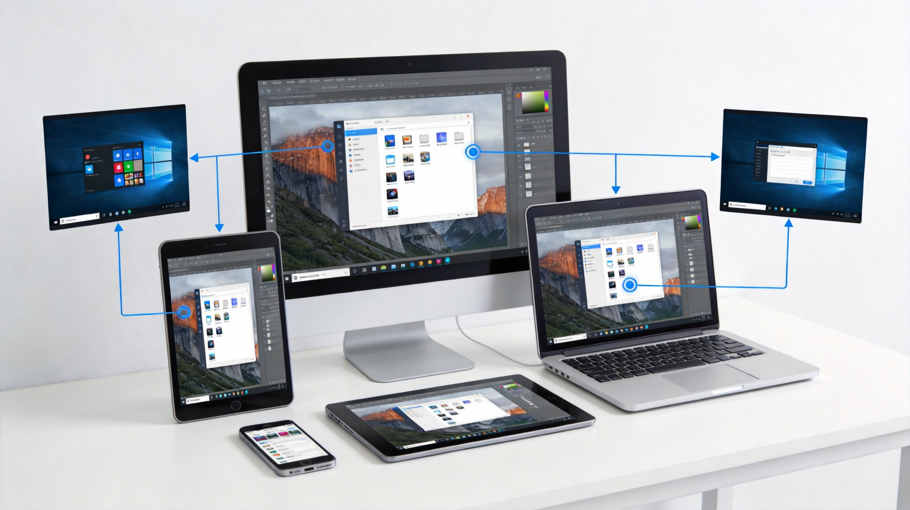

德国品质 · 极速连接 · 全平台覆盖
仅需3.5MB即可体验德国原装的远程桌面解决方案。DeskRT专有编解码器带来60fps超流畅画面与毫秒级延迟，让远程协作如同本地操作。
便携版可用：约2.9MB，U盘随身运行，无需安装

源自德国的远程控制技术，值得信赖的企业级解决方案
自研DeskRT编解码技术，60fps超流畅画面，毫秒级低延迟，复杂网络环境也能稳定连接。
TLS 1.2加密传输，RSA 2048密钥交换，通过ISO 27001认证，符合GDPR数据保护法规。
支持Windows、macOS、Linux、Android、iOS、Chrome OS、Raspberry Pi等10+平台互通。
直接拖拽文件即可传输，无需复杂设置。剪贴板内容实时同步，远程办公效率倍增。
设置无人值守访问，随时随地连接家中或办公室电脑。Wake-On-LAN远程唤醒电脑。
支持会话全程录制，白板标注功能让远程演示更直观，多人会话协作更便捷。
无论是远程办公、技术支持还是团队协作，AnyDesk都能完美胜任

多人同时访问同一设备，白板标注让远程演示如同面对面交流。
轻量级设计，兼容性强，安装包仅需3.5MB
| 平台 | 操作系统 | CPU | 内存 | 硬盘 | 安装包 |
|---|---|---|---|---|---|
| Windows | Windows 7/8/10/11 (32/64位) | 双核1GHz+ | 1GB+ | 100MB+ | ~3.5MB |
| macOS | macOS 10.13+ | Intel/Apple Silicon | 2GB+ | 100MB+ | ~6MB |
| Linux | Ubuntu 12.04+ / Debian / Fedora / CentOS | 32/64位 | 512MB+ | 100MB+ | ~5MB |
| Android | Android 5.0+ | ARM处理器 | 50MB+ | 100MB+ | ~25MB |
| iOS | iOS 11.0+ | iPhone/iPad | 50MB+ | 100MB+ | ~70MB |
| Raspberry Pi | Raspbian / Raspberry Pi OS | Pi 2/3/4 | 512MB+ | 100MB+ | ~8MB |
连接方式：只需知道对方的9位数AnyDesk地址，输入即可直接连接，无需复杂配置。
便携版：约2.9MB，可从U盘直接运行，无需安装，适合技术支持和临时使用场景。
了解更多关于AnyDesk的信息
AnyDesk采用自研的DeskRT编解码器，体积仅3.5MB却能实现60fps超流畅画面，延迟低至毫秒级。相比其他软件，AnyDesk更轻量、连接更快、安全性更高（TLS 1.2 + RSA 2048），且支持更多平台。
非常安全。AnyDesk采用TLS 1.2加密协议和RSA 2048位密钥交换技术，已通过ISO 27001信息安全管理体系认证，完全符合欧盟GDPR数据保护法规。您的连接和数据传输都受到银行级别的加密保护。
不可以。免费版仅限个人非商业用途。商业使用需要购买付费版本（Solo ¥145/月起、Standard ¥242/月起）。我们提供多种定价方案以满足不同规模企业的需求。
非常简单。只需知道对方的9位数AnyDesk地址，在自己的AnyDesk中输入该地址并点击连接即可。无需复杂的端口转发或路由器设置，真正实现"输入即连"的便捷体验。
支持Windows、macOS、Linux、Android、iOS、Chrome OS、Raspberry Pi、Apple TV等10多个平台。桌面端和移动端可以互相连接，真正实现全平台无缝协作。
便携版（Portable）是免安装版本，文件大小约2.9MB，可直接从U盘运行。非常适合IT技术支持人员外出服务或临时使用场景，无需在被控电脑上安装任何软件。
首先确保网络连接稳定。可以尝试降低画质设置（在连接栏点击齿轮图标），或关闭被控端的防火墙和杀毒软件。对于极低带宽环境，AnyDesk会自动启用流量优化模式。
您可以通过本站帮助中心提交工单，付费用户享有优先支持。也可以访问知识库和社区论坛，那里有丰富的使用教程和常见问题解答。
听听全球用户的使用体验
"作为IT运维工程师，我需要随时远程处理各地服务器问题。AnyDesk的连接速度和稳定性让我印象深刻，3.5MB的体积比TeamViewer轻多了，连接成功率也更高。"
"疫情期间公司全员远程办公，AnyDesk帮了大忙。设置简单，员工无需培训就能上手。隐私模式功能让员工在远程时也能保护自己的桌面内容，团队接受度很高。"
"我是自由职业设计师，经常需要远程访问家中的高性能工作站。AnyDesk的文件拖拽传输和剪贴板共享功能非常实用，DeskRT引擎保证了我在移动端也能流畅操作PS和AI。"
下载AnyDesk，体验德国品质的远程桌面解决方案